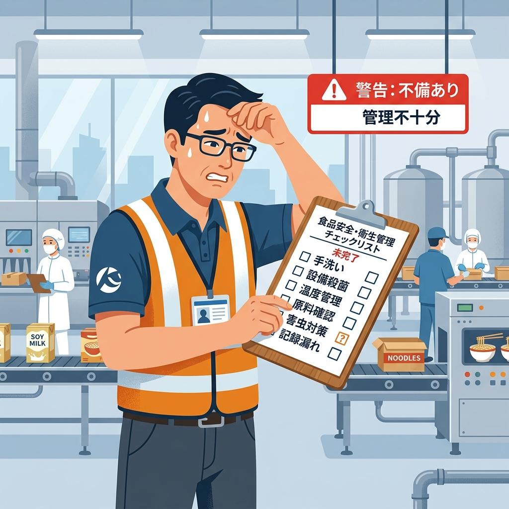

「納品先から連絡です。製品にプラスチック片が混入していたと……」
静かなオフィスに響いたその一本の電話。
急ぎ工場に確認すると、本来実施すべきだった「部品の破損確認」が、新製品用のチェックシートからすっぽりと抜け落ちていました。
【1行の漏れが招いた代償】
・廃棄金額・原料費・工数：約5,000万円
・夜間の緊急チャーター便手配による物流コスト
・24時間3交代でのリカバリー製造による現場の疲弊
・そして何より、取引先からの「記録も管理できない工場」という信頼失墜
たった1行、チェックリストに「破損なしの確認項目」が足りなかった。それだけで、取り返しのつかない事態に陥ったのです。なぜ、このような悲劇が起きたのでしょうか。
このような事故は、単なる「現場の怠慢」によって起きるのではありません。
根本的な原因は、チェックリストを作成する前段階の設計——すなわち「危害分析（ハザード分析）」の甘さにあります。
新製品を導入する際、「どこにプラスチック破損のリスクがあるか」「どの工程で混入しうるか」という分析プロセスが行われていない、あるいは担当者の勘に頼っていると、当然チェックリストの項目から漏れてしまいます。
危害分析から漏れたリスクは、現場では「存在しないもの」として扱われます。これが最大の落とし穴です。
とりあえずレ点を入れておけば、上司に怒られないし、外部の審査も通るだろう。
そう思っている現場のチェックリストは、異常を見つけるための「センサー」ではなく、ただの「作業（ペン回し）」に成り下がっています。
それでは、形骸化せず、いざという時に会社と担当者を守ってくれる「生きたチェックリスト（管理計画）」はどのように作ればいいのでしょうか。
中小企業が自社で構築するための具体的な3ステップを解説します。
まずは、厚生労働省や業界団体の手引書を参考に、自社の工程に潜むリスク（危害要因）をすべて洗い出します。
「うちの工場は大丈夫だろう」という思い込みを捨て、原理原則に沿って洗い出すことが、5,000万円の損失を防ぐ第一歩です。
洗い出したリスクに対し、それを「一般的衛生管理」のレベルで防ぐのか、「重要管理点（CCP）」として厳重に管理するのかを振り分けます。
そして、厳重な管理が必要な項目については、以下を明確にします。
| 項目 | 具体例 |
|---|---|
| ① 管理基準（許容限界） | 中心温度85℃で1分間以上加熱、金属探知機のテストピース（Fe 1.5mm）感知 |
| ② モニタリング頻度 | 1ロットごと、または2時間ごと |
| ③ 担当者と方法 | 調理・包装担当者が、中心温度計を用いて測定し、記録表に記入 |
これらの設計根拠を明確に定めておくことで、現場で「なぜこのチェックが必要なのか」という納得感が生まれ、形骸化を防ぐことができます。
3つの中で最も重要なのが「異常があったらどうするか（是正処置）」のルール化です。
温度が足りなかったら再加熱するのか、異物を感知したら前後のロットをどう保留するのか。これを事前に決めておかないと、現場の担当者はパニックになり勝手な判断で流してしまいます。結果として大事故に繋がるのです。
「うちはいつも通りやっているから大丈夫」——そう思っている今が最も危険です。
今回ご紹介した事例のように、「チェックシートに一文無かっただけ」で、会社も、担当者も、現場も、想像を絶する苦しみを味わいます。
「記録」という確固たる裏付けがあって初めて、私たちは自信を持って「安全な製品です」と言えるのです。
もし今、自社のチェックリストに少しでも不安を感じたり、「マンネリ化しているな」と感じたら、すぐに対策を講じてください。
※当サイトはAmazonアソシエイト・プログラムの参加者です。